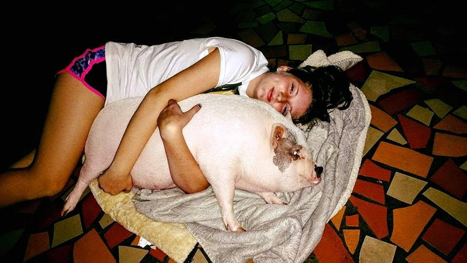

This is the page that will dive deeper into the lore that is your developer Torey Johnson
I am a 22 year old college student. I have a dream of merging my technical skills with my creative passions to help people and change thier lives. Kindness is a core value of mine. A quote I live by is "I've learned that people will forget what you said, people will forget what you did, but people will never forget how you made them feel." by Maya Angelou.
A fun ice breaker game is two truths and a lie. They usually ask you to tell three statements about yourself, and the group has to guess which one is the lie. Typically, it happens on the first day of school.
A bee stung me on my eyeball. I had a pet pig. I have a jar of air as a keepsake.

Meet Rose, my pet pig. I got her when I was 12 years old. We had gone to Tennesee to spend time with my moms family. My unlces wanted to go fishing so all 15-20. We went to lake, but my Unlce Zach forgot the bait. So my mom and I head to the cloest Walmart. A man is selling, pigs on the coldasack. It says teacup pigs, my mom pulled in next to this guy. Next thing I know, I have a pet pig! I named her Rose, after the fierce and loyal Rose Tyler from Doctor Who. She was a great pet, and I loved her so much. She was a little trouble maker, she would dig her nose into things. She would follow me around the house, and she would always want to be near me. She slept in my room at the end of my bed. She was a great companion, and I will always cherish the memories I have with her.Plus, The Simpsons Mov had just come out, and having my own "Spider-Pig" made me feel incredibly cool.